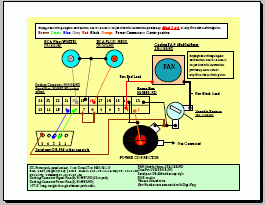

Wiring Plans For The Docks
The docks were mostly assembled and wired by using a previously built
unit as a reference model. Thus, there are no formal plans or drawings
to speak of, other than the ones below, along with photos of the job.

PDF of wiring scheme.


The End.